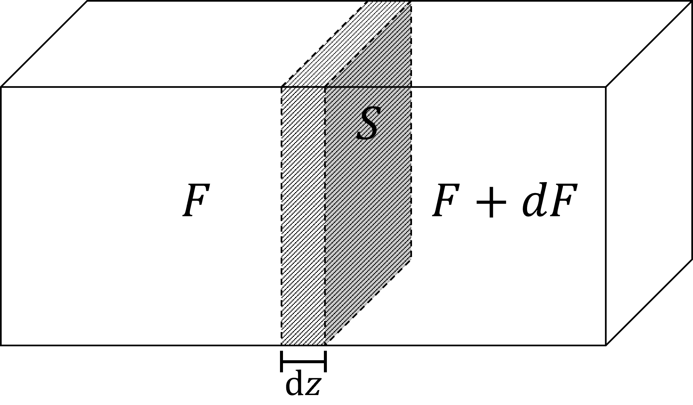

\(F\)：光子通量，即通过单位面积的光子量.
\(S\)：材料截面积.
令\(\mathrm{d}F\)为通过\(\mathrm{d}z\)段材料后单位面积上的光子通量变化量.
则\(S\mathrm{d}F\)为通过\(\mathrm{d}z\)段材料后总的光子通量变化量.
$$\therefore S\mathrm{d}F = (W_{21}n_2 - W_{12}n_1)S\mathrm{d}z$$ $$\therefore \mathrm{d}F = (W_{21}n_2 - W_{12}n_1)\mathrm{d}z$$则实现光放大的条件为：
$$\mathrm{d}F = (W_{21}n_2 - W_{12}n_1)\mathrm{d}z \gt 0$$即：
$$\frac{n_2}{n_1} \gt \frac{W_{12}}{W_{21}}$$这里只考虑受激辐射跃迁于受激吸收跃迁，因为其辐射与吸收的光子是相干的.
由爱因斯坦系数关系：
$$\frac{W_{12}}{W_{21}} = \frac{g_2}{g_1}$$ $$\therefore\frac{n_2}{n_1} \gt \frac{g_2}{g_1}$$又因玻尔兹曼分布：
$$\frac{n_2}{n_1} = \frac{g_2}{g_1}\exp\left(-\frac{E_2-E_1}{kT}\right)$$当\(g_1 = g_2\)时，\(n_2 \lt n_1\)，即：在热平衡状态下，高能级粒子数恒小于低能级粒子数.
此时集居数反转是不可能的，只有当外界向物质供给能量，从而使物质处于非热平衡状态时，才可能实现集居数反转，因此泵浦是光放大的必要条件.
此时光放大条件为：\(n_2\gt n_1\)，即粒子数反转.
Bottom